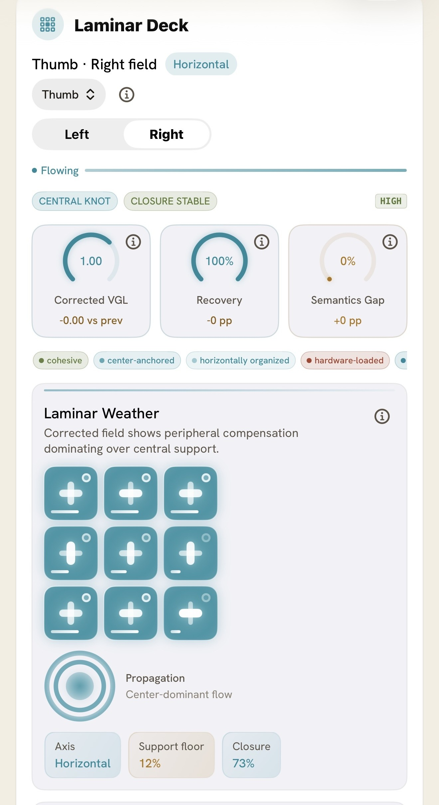
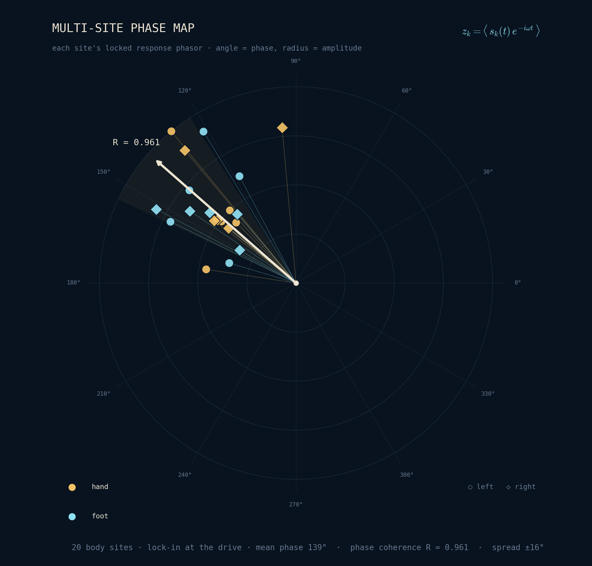
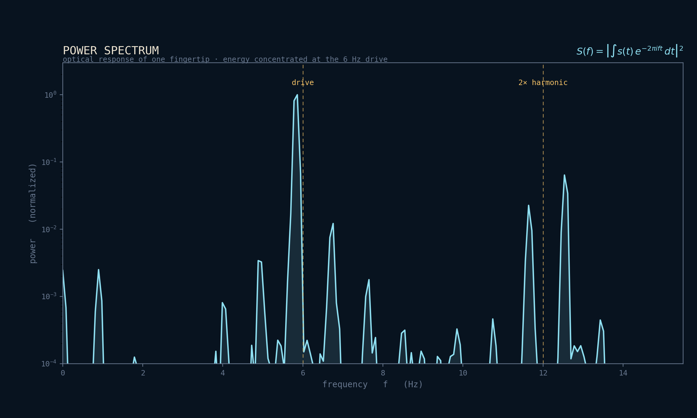

Products
Our commercial applications and developing instruments draw on selected formal health research. Each technology has a distinct engineering maturity and empirical scope.
Consumer · live
Membrane Health is available in the App Store. It organizes physiological patterns from Apple Health into a personalized daily view of state, load, and recovery.
The rolling 28-day baseline is calibration, not the verdict — it tunes the reading to your body, not to a population average. That calibrated state is then held against the formal ontology of what it means to be healthy; in the free tier, it resolves to a single read each morning — Go, Caution, or Recover. Informed by formal health research and personalized calibration. Available now in the App Store.

Research instrument · in development
QPCI is the developing multimodal research architecture for observing distributed physiological responses through a controlled stimulus, shared timing, and calibrated acquisition.
DRTT mobile research, source-witnessed Rev B hardware, and the future high-granularity array belong to this broader program. Their instrument design, evidence requirements, and development stages are detailed on the Technology page. Patent-pending research instrumentation.

Professional & research · pilots
Developing professional and research views for clinicians, coaches, and investigators using consent-driven, time-bounded physiological records.
Research and pilot workflows focus on traceable records, source context, and the empirical requirements of each intended use.

Developing instruments
Mobile research acquisition, source-witnessed portable hardware, and the multimodal QPCI architecture remain distinct development programs. Technology describes their measurement methods and current stage; Membrane Health is available today as a separate application.